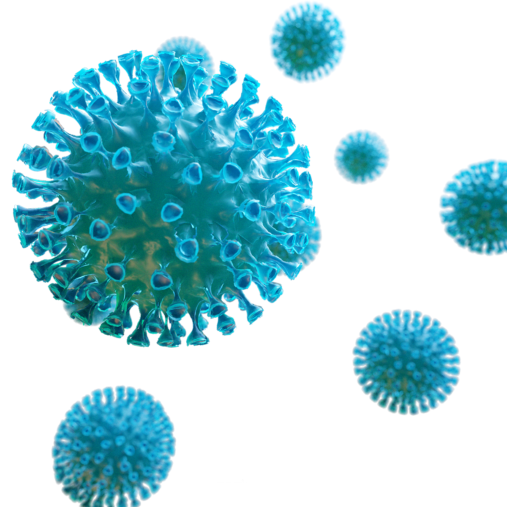

 Coronaviruses (CoV) are a large family of viruses that cause illness ranging from the common cold to more severe diseases such as Middle East Respiratory Syndrome (MERS-CoV) and Severe Acute Respiratory Syndrome (SARS-CoV). Coronavirus disease (COVID-19) is a new strain that was discovered in 2019 and has not been previously identified in humans. Coronaviruses are zoonotic, meaning they are transmitted between animals and people. Detailed investigations found that SARS-CoV was transmitted from civet cats to humans and MERS-CoV from dromedary camels to humans. Several known coronaviruses are circulating in animals that have not yet infected humans.
How serious is the situation?
The World Health Organization (WHO) has declared a global pandemic over Coronavirus. In the current situation where COVID-19 is rapidly spreading worldwide and the number of cases in Europe is rising with increasing pace in several affected areas, there is a need for immediate targeted action. The speed with which COVID-19 can cause nationally incapacitating epidemics once transmission within the community is established, indicates that in a few weeks or even days, it is likely that similar situations to those seen in China and Italy may be seen in other EU/EEA countries or the UK. There are no vaccines available and there is little evidence on the effectiveness of potential therapeutic agents.
According to the WHO, signs of infection include fever, cough, shortness of breath and breathing difficulties. In more severe cases, it can lead to pneumonia, multiple organ failure and even death. Current estimates of the incubation period - the time between infection and the onset of symptoms - range from one to 14 days. Most infected people show symptoms within five to six days.However, infected patients can also be asymptomatic, meaning they do not display any symptoms despite having the virus in their systems.What adds to the the gravity of the situation is that there is presumably no pre-existing immunity in the population against the new coronavirus and everyone in the population is assumed to be susceptible. While the majority of cases (80%) are milder respiratory infections and pneumonias, severe illness and death is more common among the elderly with other chronic underlying conditions, with these risk groups accounting for the majority of severe disease and fatalities to date.
How to protect yourself?
Stay aware of the latest information on the COVID-19 outbreak, available on the WHO website and through
your national and local public health authority. COVID-19 is still affecting mostly people in China with
some outbreaks in other countries. Most people who become infected experience mild illness and recover,
but it can be more severe for others. Take care of your health and protect others by doing the following:


Built with ♡ by Amal Antony